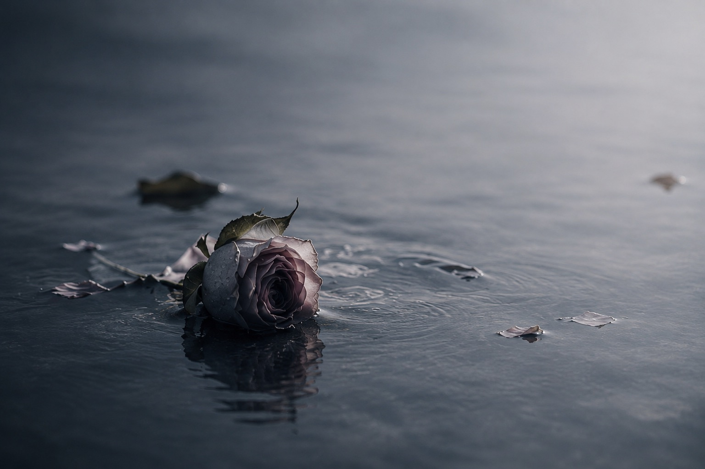

水葬メランコリア
s u i s o u m e l a n c h o l i a
行き場のない言葉を、ここに置いていきます。
words / photographs / fragments
e n t e r
u p d a t e
- 26.08.30
- PHOTO 16点を追加
- 26.08.28
- 「帰れない夜」10題
- 26.08.28
- 「枯れた花」10題
- 26.08.28
- 「海へ沈む」10題
- 26.08.28
- 「午前二時」10題
当サイトはリンクフリーです。
報告は任意ですが、していただけたらとても喜びます。